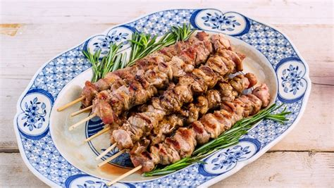
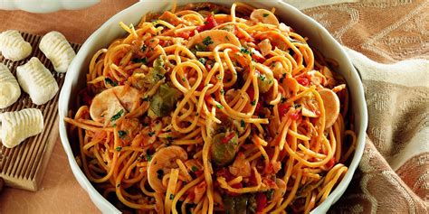
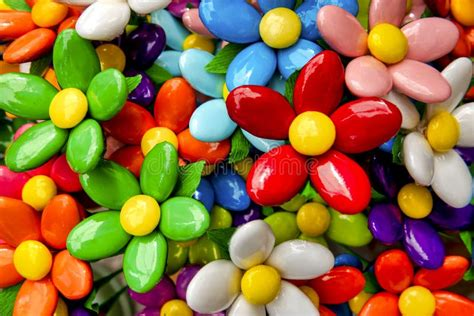
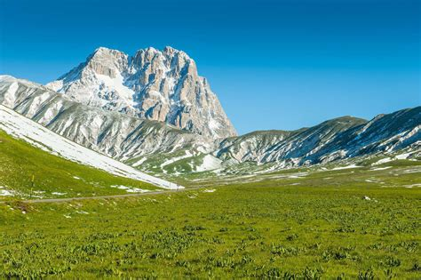
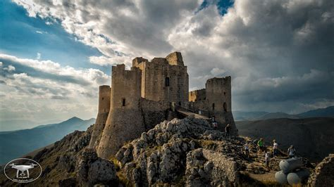
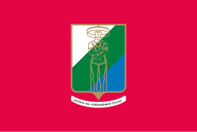

Abruzzo
Panoramica
L'Abruzzo è una regione situata nel centro Italia, famosa per la sua straordinaria varietà di paesaggi. Dalle montagne dell'Appennino alle spiagge dell'Adriatico, offre natura incontaminata, borghi medievali e una ricca tradizione gastronomica.
Fatti in Breve
- Capoluogo: L'Aquila
- Lingua: Italiano
- Popolazione: Circa 1.3 milioni
- Famosa per: Parchi naturali, monti e spiagge, cucina rustica
- Curiosità: Circa un terzo del territorio è protetto da parchi e riserve naturali!
Piatti Tipici
Arrosticini

Maccheroni alla chitarra

Brodetto di pesce

Confetti di Sulmona

Luoghi Famosi
Gran Sasso d’Italia

Rocca Calascio

Costa dei Trabocchi

Sulmona

Parco Nazionale d’Abruzzo

Quando Visitare
L’estate è perfetta per il mare e l’escursionismo, mentre l’inverno attira sciatori sulle montagne. Primavera e autunno offrono colori magnifici e minore affluenza turistica.
Simboli Regionali
- Bandiera: 
- Stemma: